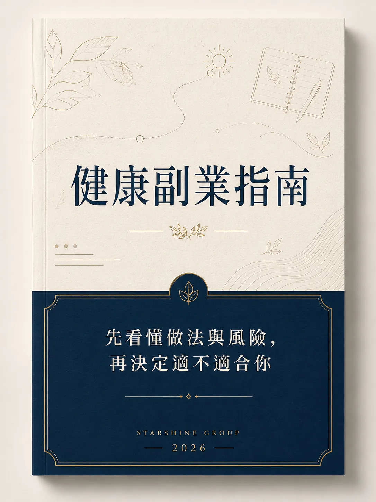

▸
星耀提供
有成熟產品，不必從零試錯
你不必自己找工廠、測配方、賭市場反應。
星耀承接 30 年健康市場經驗，
讓你一開始就站在更成熟的產品基礎上。
薪水追不上開銷？你不是不夠努力。
每天認真工作，但房貸、車貸、家庭支出，總是比加薪更快出現。
有家要顧、有長輩要照顧，
也更不能把積蓄拿去賭一個未知機會。
不是不願意努力，而是下班後的精力，
早已被家庭與責任無形瓜分。
當收入來源只有一個，
任何變動都可能讓生活變得被動。
不是立刻辭職，也不是衝動創業，
而是先看懂一種低負擔開始的可能。
多一份收入選擇，不是為了冒險，
而是為了讓生活多一點 主動權。
看清楚每一種選項，
背後真正要扛的是什麼。
其實， 只是下班後再上一份班。
用零碎時間，
賺取更高的收入可能。
不先壓錢進貨，
就能開始測試市場需求。
素材、流程、陪跑都有人帶，
新手也能更快進入狀況。
當風險與負擔降低了，下一步要看的就是：
這個市場，是否真的有長期需求。
點開你的通訊錄，
你身邊一定有人正在面對這些狀況：
產品、後勤、信任、陪跑，
星耀已經先替你搭好。
有成熟產品，不必從零試錯
你不必自己找工廠、測配方、賭市場反應。
星耀承接 30 年健康市場經驗，
讓你一開始就站在更成熟的產品基礎上。
有平台後勤，不必獨自扛起一切
你不用囤貨、不用一次壓大筆成本。
出貨、物流、後勤、客服流程，
都由平台系統承接。
用信任機制，取代靠交情成交
你不用費盡心思去說服，
只要拿出數據與成效，
對方的切身需求，自然被你解決。
有陪跑系統，一步一步把你帶上路
你不是被丟進市場自己摸索。
從入門、教材、流程到實戰陪伴，
都有經驗夥伴一路接住你。
孩子出生後，他才發現：自己已經很努力了，但家庭還是不夠安心。
每天早八晚八、每月加班 80 小時，收入看起來不差，真正讓他不安的是：家裡只剩自己這一條收入線。
剛結婚時覺得夠用，直到孩子出生、太太全職照顧家庭，他才真正感受到一份薪水的壓力。
他沒有一開始就離職，而是先用下班後的時間，了解一個不用先壓大成本的健康市場方向。
後來他發現，收入不一定只能靠更多加班換來。
做了 37 年美髮，她最怕的不是累，是「只要停下來，收入也停下來」。
她靠雙手、技術和客人信任撐起工作室，但年紀上來後，她開始擔心：如果哪天不能再一直站著服務客人，收入也會跟著停下來。
她沒有推翻原本的工作，而是開始替未來多想一步。
後來，她從自己的狀態改變開始。客人看見她不一樣了，開始主動問：「你最近怎麼調整的？」
這個自然的入口，讓她把 37 年累積的信任，延伸成新的健康市場收入線。
她曾經最怕的，是想給孩子多一點，卻總要先想錢夠不夠。
她把大部分時間留給家庭，卻也因此失去自己的收入安全感；很多想為孩子多做一點的念頭，最後都會被現實拉回來。
以前的她，把時間都放在家庭。但沒有自己的收入，很多小事都會變成壓力。
帶孩子出門、安排生活、想替家裡多做一點，都會先被錢夠不夠卡住。
後來，她從自己的狀態改變和家庭健康需求開始，慢慢讓身邊有相同困擾的人願意了解。
她沒有離開家庭，而是在家庭之外，重新建立自己的選擇權。
以上為真實個人經驗分享，實際成果會因投入時間、學習狀況與執行方式而不同，並非收入保證。
先看懂做法，再決定適不適合你。
